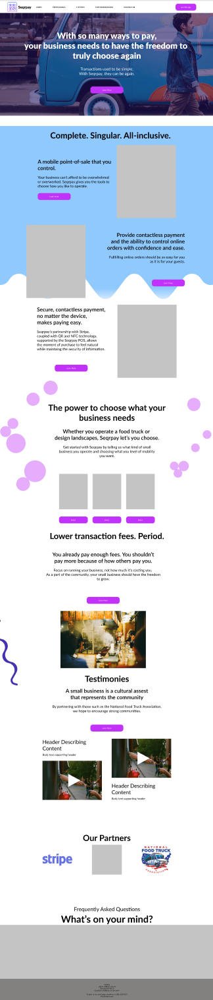

responsive web design – Nov 2020
seqrpay

Users' comprehension of seqrpay improved by 75%.
THE CLIENT.
A startup, such as seqrpay, must optimize its time and the way it fails in order to succeed. In two and a half weeks, seqrpay needed a responsive website designed that could clearly inform millennials and small business owners about seqrpay. Our design team worked with stakeholders - identifying user needs and their experiences - to design a responsive site ready for development.
WHAT I DID.
User research and insights, writing site copy, information architecture, visual design, testing.
THE TEAM.
Brian Rainey – UX Designer
Carl Booker – UX Designer
Madison Smith – UX Designer
Monica Garza – UX Designer
Theresa Morgan – UX Designer
What we made.
THE PROBLEM.
The life of a food truck vendor - of a small business owner - is punctuated by high transaction fees, incompatible ordering solutions, and fragmented payments. Target users had no way to learn about how seqrpay solves this problem for both the small business and their guests. A solution is nothing unless it can be understood.
OBJECTIVE.
We needed to make a desktop and mobile site but were provided only a target user and a vague idea of the solution being offered; that it would have QR tech at its center. Schedules could not be coordinated bewteen design and stakeholders for the first week of this project.
Because we knew little about QR codes, millennials, and the digital wallet environment, the process began by deeply researching these core aspects and how they interact. I personally have six years of experience in the Food & Service Industry which helped to focus research efforts. Monica's experience of having been an esthetician was also helpful in understanding a small business perspective.
There were two distinct users that would be using the site: the small business owner and the guest of the business; millenials. Thus, we chose to create two proto personas. We then conducted heuristic analyses and general competitor analyses of direct and indirect competitors’ websites and offerings because we needed to understand how these two users function in similar, existing point-of-sale spaces.
Now that we had a clear point-of-departure, we needed to begin empathizing with our users. Due to my understanding of the industry, inability to coordinate schedules with stakeholders and time contraints of the project, we began immediately developing insights based on research and the experience of the team members. These insights were needed in order understand what users would be looking for in a site offering a point-of-sale solution
The Artifacts.
Using a Proto-persona for the Small-business was important to this project so as to keep track of our primary target's needs. Their day-to-day experiences would inform what they need from seqrpay's website.

Because we had two users to understand, a storyboard was useful for capturing an example of what their interaction might look like. Doing this would help to uncover pains that might otherwise be unbeknownst to both users at the moment of their interaction.

Deductive ideation – which was based in core themes identified from primary and secondary research – was utilized in order to better flesh out the idea in words of what we needed to capture with the would-be website.

Sketching was helpful in order to see what possible pages could look like.

We wanted to explore solutions outside of the obvious. Conducting hueristic analyses of gaming and UX agency websites helped develop our understanding of what we needed to include in our own site. This also allowed us to quickly make low-fidelity protoytpes concurrent other process efforts.
WRITING THE COPY.
At this point, the central focus of this project was clear: consicely conveying seqrpay’s solution.
We hypothesized that, if we could do this effectively, the other arguable
foci – adoptability, comprehension, garnering trust,
images displayed on the site, accents of color – would all follow suit.
So, in a word, the focus of this project was...words.
We found word choice surrounding mobile point-of-sale systems in the service industry to be very
polarizing. One challenge we were facing was the damage that early mobile point of sale systems
had done. This provided further proof that site copy needed to be recieved well by our users.

UX copy on mobile viewport
Copy-derived UI
AT-A-GLANCE.
Users needed to grasp an understanding of seqrpay at-a-glance otherwise we'd lose them. Having a firm grasp on the site’s language and how visitors would understand that language made it easy to use the words to inform visual design decisions – UI elements such as illustrations and images to convey meaning – for those that might simply skim a site.

The "How it works" page itself
HOW IT WORKS.
Identified from heuristic and competitor analyses, this type of page was frequently utilized. Without this page and without decisive copy thereon, we would have an incomplete site, and thus, would be putting seqrpay at risk of being misunderstood. User tests of this page revealed it was useful for understanding seqrpay's solution that seqrpay could offer. I formulated UX insights of the business and of their guests that informed the copy used on this page.
SITE ARCHITECTURE.
We now needed to structure all of this information. To do this, we used card sorting. Sorting showed that our navigation would need to include the logo as a home button, an about us page, a business page, a consumer page, a how it works page, a login page, and a sign up page. Now we knew what the site would look like.
In order to test our decisions with potential users, Thirteen one-on-one interviews and more than 25, five-second A/B tests were conducted.
TESTING DECISIONS.
Testing revealed that users’ comprehension of seqrpay improved by 75%. Before, it was taking as long as one minute for users to comprehend seqrpay. With our design, we got this down to 15 seconds. This was metric for success being that 15 seconds is the statistical amount of time a user will decide to continue reading or not.
ITERATING.
Though we improved comprehension, there were still some opportunities to improve copy and the overall design. Iterating based on test results would allow us to develop high-fidelity prototypes of all the site pages for desktop and mobile.
Fidelity Comparisons.
Low-fi

Low-to-Mid
High-fi (Final)